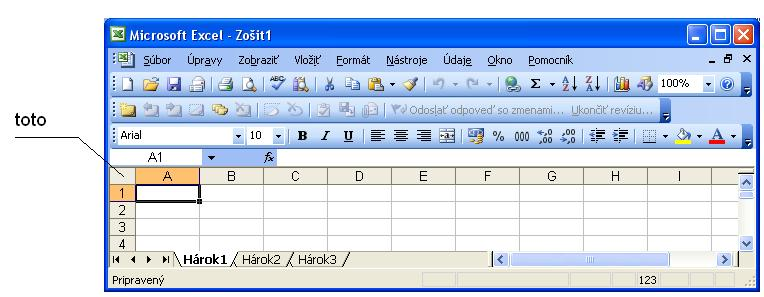

Samotná tabuľka do ktorej zadávame údaje pozostáva z riadkov (riadky sú označené číslami) a stĺpcov označené písmenami. Počet riadkov
bol oproti verzii 2003 zväčšený na cca 1mil a stĺpce sú až po trojicu XFD (cca 26x26x23 = 15500).
Adresa
Každá bunka má jedinečnú adresu tvorenú stĺpcom=(písmeno alebo dvojica písmen)
a riadok=číslo. Celá adresa je teda napr. A1, MA100, ... Dôležité pre písanie vzorcov do buniek.
Neskôr budeme potrebovať označiť oblasť - obdĺžnik tvorenú z viacerých buniek, to je možné pomocou dvojice
jednoduchých adries oddelených dvojbodkou (napr. b3:c5), kde prvá adresa je súradnica ľavého horného rohu a druhá
pravého dolného rohu oblasti.
Niektoré bunky/rozsahy môžu dostať od užívateľa aj ďalšie meno:
presunieme sa na požadovanú bunku resp. označíme niektoré bunky
do okienka "Aktuálna adresa bunky" napíšeme svoj nový názov (napr. plat)
tento názov môžme používať vo vzorcoch
Pohyb v tabuľke
V danom okamihu je aktuálna jedna bunka - poznáme ju podľa toho,
že je orámovaná hrubším rámikom a okienku s ukazovateľom adresy je zapísaná jej adresa. Toto orámovanie voláme kurzor.
Zmenu aktuálnej bunky dosiahneme:
Stláčaním kurzorových šipiek - presun na susedné políčko
Klávesami PgDn, PgUp - presun o stránku dole, resp. hore
ALT+PgDn, resp. ALT+PgUp - presun o stránku vpravo, resp. vľavo
CTRL+kurzorové šipky - presun na začiatok alebo koniec súvislého úseku dát v riadku resp. stĺpci
napísaním adresy do okienka s ukazovateľom adresy zapíšeme adresu a stlačíme enter.
klik na End a potom kurzorová šípka
ak je aktuálna bunka prázna, kurzor "pobeží" vo zvolenom smere až zastane na prvej zaplnenej
ak je aktuálna bunka prázna a susedná bunka je zaplnená, kurzor "zastane" na susednej bunke
ak je aktuálna bunka prázna a susedná bunka je prázdna kurzor "zastane" na prvej zaplnenej bunke
vo všetkých spomenutých prípadoch, ak nenájde cieľ, zastane na "okraji" tabuľky
(veľmi šikovná vec na presun na okraje veľkej vyplnenej tabuľky)
Typy dát v bunke:
Do bunky možme zadať nasledovné typy dát
Dátum
Všetko čo počítač rozpozná ako dátum zapíše ako dátum, ak to potrebujeme reprezentovať ako text vložíme predeň znak apostrof.
Dátumová hodnota je implicitne zarovnaná ku pravému okraju bunky rovnako ako číslo. Excel si tvar ako má vyzerať dátumová
a časová konštanta berie z nastavenia Windows, ďalej predpokladáme, že vo Win je nasledovný tvar: "dd.mm.rr"
Samozrejme, že zobrazovaný tvar dátumu môžeme v Exceli zmeniť, ale to až neskôr.
Príklady:
15.10.02 ... je dátum 15. október 2002
1.3.2002 ... je dátum 1. marca 2002 počítač štandartne zobrazí ako 01.03.02
Pozn. Ak je vo Win nastavený krátky dátum len dd.mm vznikajú problémy pri zadávaní čísel
napr. 1.02 počítač reprezentuje ako dátum 1. februára
Čas
Aj tu je podstatné, ako je tento typ definovaný vo Windows, obyčajne sa používa tvar H:mm:ss,
ktorý používa 24 hod. zobrazenie, hodiny zobrazuje aj jednociferne, minúty a sek. vždy dvojciferne.
Samozrejme, že zobrazovaný tvar času môžeme v Exceli zmeniť, ale to až neskôr.
Príklady:
2:3:4 ... je čas 2 hod. 3 min. 4 sek po polnoci, zobrazenie v bunke bude 2:03:04
15:15:15 ... je čas 3 hod. 15 min. 15 sek poobede
Čísla
Všetko čo počítač rozpozná ako číslo, je aj ako číslo chápané. Ak chceme zadať číslo ako ako text musíme predeň vložiť znak apostrof.
Príklady dovolených číselných formátov:
1, -18, 2.54, -10.1, 1e2, 2e-2, 0.5e3, -25E-3
Upozornenie: pozor na desatinnú čiarku, resp. bodku, excel si desatinný oddelovač
berie z nastavenia vo Windows a može to byť raz des. bodka raz čiarka.
Ak počítač číslo správne detekuje implicitne ho zarovná ku pravému okraju bunky, ak sa nám to nedarí
problém môže byť:
desatinná bodka - desatinná čiarka -> pozrieme do win ako je predpísané desatinné číslo
políčko je určené ako textové -> "Domov" -> "Číslo" -> rozbalíme ponuku a zvolíme "Obecne" (alebo číslo)
Spôsoby zobrazenia čísla v bunke môžu byť rôzne:
bežné číslo - môžme určiť počet des. miest
vedecké - číslo, napr. 2,58E6
zlomok
mena, účtovnícke - číslo na dve des. miesta a pridá znak meny (implicitne berie z nastavenia Win)
percentá - číslo vynásobí 100 a pridá znak %
Logické hodnoty
Ide o dve hodnoty TRUE a FALSE
(v starších verziách PRAVDA a NEPRAVDA, čo robilo "veľké" problémy pri zadávaní názvu nemenovaného denníka.)
Ak potrebujeme zadať uvedené hodnoty ako texty vložíme pred ne znak apostrof.
Logická hodnota je implicitne zarovnaná v bunke na stred a napísaná veľkými písmenami .
Príklady:
True ... túto hodnotu počítač pochopí ako logickú hodnotu a zobrazí ako TRUE
'True ... túto hodnotu počítač pochopí ako text a zobrazí True
Ak bunku resp. skupinu buniek označíme ako textové (pomocou "Formát bunky" -> zvolíme kartu "Číslo" -> zvolíme "Text")
predídeme podobným problémom a všetko čo do nich dáme bude chápané ako text.
Ak chceme toto "zakliatie" bunky zrušiť urobíme to nasledovne Klikneme pravým a zvolíme "Formát bunky" -> zvolíme kartu "Číslo" -> zvolíme "Obecne"
(alebo cez Domov->Úpravy->Vymazať->Všetko)
Vzorec
výraz ktorý začína znakom =.
Aritmetické operátory: +,-,*,/,^(exponent)
Textový operátor: &(spojí dva reťazce)
Reťazce - texty-konštanty vo vzorcoch musia byť v úvodzovkách (napr. =A1&", "&A2)
Príklad:
=5*40 ... počítač zístí že ide o vzorec, vypočíta ho a výsledok zobrazí ... 200
=2^8 ... zobrazí 256
="Dobrý "&"deň" ... zobrazí Dobrý deň
Text
Všetko v čom počítač nerozpozná dátum, čas, číslo ani log. hodnotu bude excel reprezentovať ako text a implicitne
to zarovná ku ľavému okraju bunky. Všetko čo začína apostrofom je chápané ako text.
Vo vzorcoch zadávame text ako text uzavretý v úvodzovkách.
Zadávanie údajov
Údaje do bunky možno dostať napísaním do vstupného riadku a stlačiť Enter, alebo stlačím F2 a môžem obsah bunky
písať-opravovať priamo v tele bunky, alebo kliknutím na vstupný riadok (kde je zobrazený obsah bunky), možno tento obsah editovať..
Je vhodné si zistiť vo Win ako sú reprezentované údaje ako "des. číslo, dátum a čas" lebo Excel toto preberá. Pri zadaní
2,3 to počítač na Slovensku implicitne chápe ako číslo a zadanie 2.3
počítač potom chápe ako krátky dátum a upraví vzhľad podľa nastavenia win na 2.III
Dáta možno do bunky dostať aj kopírovaním, presúvaním, ťahaním, vypĺňaním - preberieme neskôr.
Zobrazenie obsahu bunky
Ak sa textový údaj nezmestí do bunky a susedná bunka vpravo nie je prázdna, zobrazený text je skrátený (ale obsah bunky je neskrátený)
Ak sa textový údaj nezmestí do bunky a susedná bunka vpravo je prázdna, text "preteká" ponad susedné bunky pokiaľ nenarazí na bunku zaplnenú.
Ak sa netextový údaj nezmestí do bunky býva nahradený znakmi ### (údaj je však naďalej v bunke, len jeho zobrazenie je "pokazené").
Na zobrazenie celej hodnoty musíme často bunku/stĺpec zväčšiť. (pozri zmena veľkosti bunky)
Zmena obsahu bunky
- Úpravou dát vo vstupnom riadku alebo stlačením F2 a úpravou dát priamo v bunke.
- Väčšinou možno vo vstupnom riadku vidieť dáta ako sme ich naklepali a v bunke môžu vyzerať ináť podľa toho ako má prikázané ich zobrazovať.
- Na zmenu typu zadaných dát (napr. číslo 1,2 chceme aby sa zmenilo na text 1,2) môžme zvoliť nasledovný postup:
klik pravým na bunku -> zvolíme "Formát bunky" -> zvolíme kartu "Číslo" -> zvolíme "Text".
Obsah bunky by sa mal presunúť z pravej časti do ľavej (text je zarovnaný sprava)
Zmena veľkosti bunky, riadku, stĺpca
Zväčšenie šírky stĺpca - prejdeme myšou hore medzi názvy stĺpcou (kurzor sa zmení na )
a potom stlačíme ľavé tlačítko myši.
Ťahaním teraz môžeme ľubovoľne meniť šírku stĺpca. (pri ťahaní nám excel vypisuje aktuálnu šírku v dvoch jednotkách "počet znakov" a "pixle")
Pozn. Namiesto ťahania možno použiť dvojklik, ktorý zabezpečí minimálnu šírku stĺpca aby všetky údaje v ňom boli celé viditelné. (ak je stĺpec prázdny, dvojklik nemá žiadny účinok)
(Namiesto dvojkliku možno použiť záložka "Domov", karta "Bunky", voľba "Formát" a zvolíme "Prispôsobiť šírku stĺpca")
Zväčšenie výšky riadku - prejdeme myšou vľavo medzi názvy riadkov (kurzor sa zmení) a stlačíme ľavé tlačítko.
Ťahaním teraz môžeme ľubovoľne meniť výšku riadka.
(pri ťahaní nám excel vypisuje aktuálnu šírku v dvoch jednotkách "počet bodov" a "pixle")(1 bod je asi 0,35mm)
Pozn. Namiesto ťahania možno použiť dvojklik, ktorý zabezpečí minimálnu výšku riadka aby všetky údaje v ňom boli celé viditelné. (ak je riadok prázdny, dvojklik nemá žiadny účinok)
Iný spôsob je pomocou Menu - Záložka Domov na karte Bunky zvoliť Format a tam zvoliť "Šírka stĺpca" - zadáme v počte znakov (môžeme zadať aj desatinné číslo)
(ak vieme že zadávaný text bude mať max. 10 znakov a my zadáme šírku 10, zadaný text sa nemusí do bunky zmestiť - záleží od písma a zadávaného textu)
Podobne je to aj pre výšku riadkov - výšku zadávame v bodoch
Pozn.
Ak chceme zadať šírku stĺpcov alebo výšku riadkov v cm musíme zvoliť na záložke "Zobraziť" "Rozloženie strany" a potom nám už šírku aj výšku píše v cm.
Zmena veľkosti všetkých buniek
Často chceme nastaviť rovnakú šírku pre všetky stĺpce (pre väčšinu) prípadne rovnakú výšku pre všetky riadky. Použijeme tlačítko
nad označením 1. riadka (teda nad číslom 1), ktoré nemá žiadne označenie. stlačením nám celá tabuľka omodrie a teraz ak nastavíme šírku
niektorému stĺpcu alebo výšku niektorému riadku bude to aplikované na všetky stĺpce resp, riadky, ktoré majú aspoň jednu bunku zaplnenú.

Kontrolné otázky
Aké typy dát zapisujeme do buniek
Ako excel rozlíši aký typ dát sme zadali
Ako zadáme do bunky text True, text 12:30
V akých jednotkách zadávame šírku stĺpca, výšku riadku
Ako zmeníme šírku všetkým stĺpcom
Ako zminimalizujeme šírku všetkých stĺpcov
(čo sa stane so stĺpcami, ktorých všetky bunky sú prázdne)